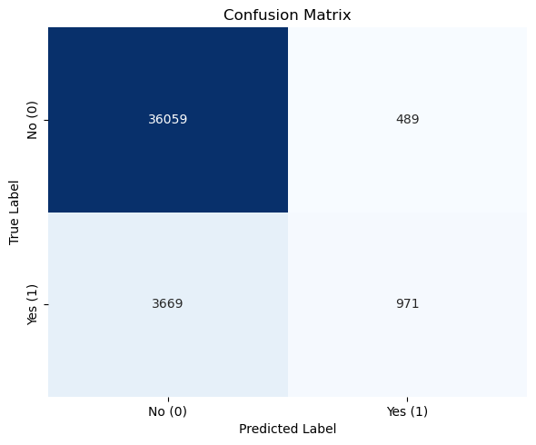
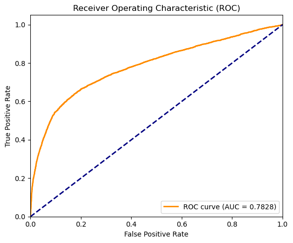

16장 로지스틱 회귀#
1. 데이터 업로드#

출처: UCI Machine Learning Repository, Bank Marketing Data Set
Gemini 설명#
제공된 데이터셋(bank-additional-full.csv)은 은행의 텔레마케팅 캠페인과 관련된 데이터이다. 고객이 정기 예금(term deposit)에 가입할지 여부를 예측하기 위해 주로 사용되는 전형적인 은행 마케팅 데이터이다.
데이터의 주요 특징은 다음과 같다.
1. 데이터 구조#
행(rows): 41,188개
열(columns): 21개
결측치(missing values)는 존재하지 않는다.
2. 변수(feature) 구성#
데이터는 크게 5가지 범주로 나눌 수 있다. 괄호 안의 영문 표기는 모두 소문자로 작성되었다.
고객 기본 정보 (client data)
age: 나이job: 직업 (관리자, 블루칼라, 학생 등)marital: 결혼 여부education: 교육 수준default: 신용 불량(채무 불이행) 여부housing: 주택 담보 대출 여부loan: 개인 대출 여부
현재 마케팅 캠페인 관련 정보 (last contact data of the current campaign)
contact: 연락 수단 (휴대폰, 유선전화)month: 마지막으로 연락한 달day_of_week: 마지막으로 연락한 요일duration: 마지막 연락 시 통화 지속 시간 (초 단위)
기타 캠페인 관련 정보 (other attributes)
campaign: 이번 캠페인 기간 동안 해당 고객에게 연락한 횟수pdays: 이전 캠페인에서 마지막으로 연락받은 후 경과한 일수previous: 이번 캠페인 이전에 해당 고객에게 연락한 횟수poutcome: 이전 마케팅 캠페인의 결과 (성공, 실패 등)
사회·경제적 지표 (socio-economic context attributes)
emp.var.rate: 고용 변동률cons.price.idx: 소비자 물가 지수cons.conf.idx: 소비자 신뢰 지수euribor3m: 3개월 유리보(유로 은행 간 금리)nr.employed: 취업자 수
타겟 변수 (target variable)
y: 해당 고객이 정기 예금에 가입했는지 여부 (‘yes’ 또는 ‘no’)
전반적으로 이 데이터셋은 다양한 수치형(numerical) 및 범주형(categorical) 변수가 혼합되어 있으며, 경제 지표까지 포함되어 있어 마케팅 성공 확률을 분석하고 예측 모델을 만드는 데 적합하다. 특정 변수에 대한 분포나 추가적인 분석이 필요하다면 분석 방향을 제시해 주면 된다.
2. 요약 통계 및 가입률 구조#
Gemini 분석#
요청한 데이터의 요약 통계와 가입률 구조 분석 결과는 다음과 같다.
1. 수치형 변수 요약 통계#
변수명 |
count |
mean |
std |
min |
25% |
50% |
75% |
max |
|---|---|---|---|---|---|---|---|---|
age |
41188 |
40.02 |
10.42 |
17 |
32 |
38 |
47 |
98 |
duration |
41188 |
258.29 |
259.28 |
0 |
102 |
180 |
319 |
4918 |
campaign |
41188 |
2.57 |
2.77 |
1 |
1 |
2 |
3 |
56 |
pdays |
41188 |
962.48 |
186.91 |
0 |
999 |
999 |
999 |
999 |
previous |
41188 |
0.17 |
0.49 |
0 |
0 |
0 |
0 |
7 |
emp.var.rate |
41188 |
0.08 |
1.57 |
-3.4 |
-1.8 |
1.1 |
1.4 |
1.4 |
cons.price.idx |
41188 |
93.58 |
0.58 |
92.2 |
93.08 |
93.75 |
93.99 |
94.77 |
cons.conf.idx |
41188 |
-40.50 |
4.63 |
-50.8 |
-42.7 |
-41.8 |
-36.4 |
-26.9 |
euribor3m |
41188 |
3.62 |
1.73 |
0.63 |
1.34 |
4.86 |
4.96 |
5.04 |
nr.employed |
41188 |
5167.04 |
72.25 |
4963.6 |
5099.1 |
5191 |
5228.1 |
5228.1 |
pdays의 경우 대부분의 값이 999(이전 캠페인에서 연락받지 않음)이므로 평균값이 높게 나타난다.duration(통화 지속 시간)은 값의 편차가 매우 크며, 타겟 누수(target leakage)를 일으킬 수 있으므로 주의해야 한다.
2. 범주형 변수 요약 통계#
변수명 |
count |
unique |
top (최빈값) |
freq (빈도) |
|---|---|---|---|---|
job |
41188 |
12 |
admin. |
10422 |
marital |
41188 |
4 |
married |
24928 |
education |
41188 |
8 |
university.degree |
12168 |
default |
41188 |
3 |
no |
32588 |
housing |
41188 |
3 |
yes |
21576 |
loan |
41188 |
3 |
no |
33950 |
contact |
41188 |
2 |
cellular |
26144 |
month |
41188 |
10 |
may |
13769 |
day_of_week |
41188 |
5 |
thu |
8623 |
poutcome |
41188 |
3 |
nonexistent |
35563 |
y (타겟) |
41188 |
2 |
no |
36548 |
3. 전체 가입률(y) 구조#
정기예금 가입 여부 (y) |
고객 수 (Count) |
가입 비율 (Rate, %) |
|---|---|---|
no (미가입) |
36548 |
88.73 |
yes (가입) |
4640 |
11.27 |
전체 고객 중 약 11.27%만이 정기 예금 캠페인에 가입하였다. 전형적인 클래스 불균형 현상을 보여주며, 예측 모델링 시 이 점을 고려해야 한다.
4. 시각화 (직업별 가입률)#

그래프를 보면, 학생(student) 과 은퇴자(retired) 그룹의 정기예금 가입률이 약 25~30% 사이로 다른 직업군에 비해 압도적으로 높음을 확인할 수 있다. 반면 블루칼라(blue-collar)와 서비스직(services) 종사자는 가입률이 10% 미만으로 비교적 낮게 나타난다.
3. 로지스틱 회귀#
Gemini 분석#
1. 로지스틱 회귀(Logistic Regression)란?#
로지스틱 회귀는 이름에 ‘회귀(Regression)’가 들어가지만, 실제로는 데이터가 특정 클래스에 속할 확률을 예측하는 분류(Classification) 알고리즘이다. 보통 결과가 두 가지(예: 성공/실패, 가입/미가입, 0 또는 1)로 나뉘는 이진 분류(Binary Classification) 문제에 널리 사용된다.
왜 일반 선형 회귀가 아닌 로지스틱 회귀를 사용하는가?#
일반적인 선형 회귀(Linear Regression) 모델은 독립 변수의 값에 따라 예측값이 음수(\(-\infty\))에서 양수(\(+\infty\))까지 무한히 뻗어나갈 수 있다. 하지만 우리가 알고 싶은 것은 ‘확률’이므로 결과값이 항상 0과 1 사이에 있어야 한다.
이 문제를 해결하기 위해 로지스틱 회귀는 시그모이드(Sigmoid) 함수(또는 로지스틱 함수)를 도입한다. 시그모이드 함수는 어떤 입력값이 들어오든 그 결과를 S자 곡선 형태를 띠며 0과 1 사이의 값으로 변환해 준다.
로지스틱 회귀는 성공할 확률 에 대해, 성공 확률과 실패 확률의 비율인 오즈(Odds, \(\frac{p}{1-p}\))에 자연로그를 취한 로그-오즈(Log-odds) 즉, 로짓(Logit) 을 종속 변수로 삼아 선형 방정식을 구성한다. 식으로 표현하면 다음과 같다.
여기서 파라미터(\(\beta\)) 추정은 일반적인 최소제곱법(OLS) 대신 최대가능도(maximum likelihood) 방법을 사용하여 이루어진다.
2. 분석 데이터와 모델 설정#
제공된 bank-additional-full.csv 데이터를 사용하여 고객이 정기 예금 캠페인에 가입할 확률(y=1)을 예측하는 로지스틱 회귀 모델을 구성하였다.
타겟 변수:
y(yes=1, no=0)통화 지속 시간(
duration): 얼핏 보면 가입 여부와 큰 상관관계가 있어 보이지만, 실상은 “가입할 의향이 있는 고객과 통화를 더 길게 하기 때문에” 발생하는 결과적 성격이 강하다. 통화하기 전에는 알 수 없는 변수이므로, 예측 모델링 시 심각한 타겟 누수(target leakage)를 유발한다. 따라서 분석에서 제외하였다.사용된 주요 독립 변수: 고객 정보(
age,job,marital,education), 경제 지표(emp.var.rate,cons.price.idx,cons.conf.idx,euribor3m,nr.employed), 과거 캠페인 이력(campaign,previous,poutcome), 연락 수단(contact) 등을 사용하였다.
3. 로지스틱 회귀 추정 결과#
범주형 변수의 경우 하나를 기준(Reference)으로 잡고 나머지 범주에 대한 더미(Dummy) 변수를 생성하여 최대가능도 추정을 진행한 결과이다.
변수 |
회귀계수 (coef) |
표준오차 |
z값 |
p-value |
오즈비 (Odds Ratio) |
|---|---|---|---|---|---|
const (상수항) |
-109.501 |
14.54 |
-7.531 |
0.000 |
0.0000 |
age (나이) |
0.0008 |
0.002 |
0.389 |
0.697 |
1.0008 |
campaign (연락 횟수) |
-0.0445 |
0.009 |
-4.787 |
0.000 |
0.9565 |
previous (이전 연락 횟수) |
0.0461 |
0.053 |
0.869 |
0.385 |
1.0472 |
emp.var.rate (고용변동률) |
-0.7346 |
0.059 |
-12.385 |
0.000 |
0.4797 |
cons.price.idx (소비자물가지수) |
1.1935 |
0.095 |
12.601 |
0.000 |
3.2985 |
cons.conf.idx (소비자신뢰지수) |
0.0443 |
0.005 |
8.091 |
0.000 |
1.0453 |
euribor3m (3개월 유리보) |
0.0156 |
0.075 |
0.207 |
0.836 |
1.0157 |
nr.employed (취업자수) |
-0.0006 |
0.001 |
-0.445 |
0.656 |
0.9994 |
job_blue-collar (블루칼라) |
-0.2339 |
0.068 |
-3.452 |
0.001 |
0.7915 |
job_retired (은퇴자) |
0.3209 |
0.093 |
3.453 |
0.001 |
1.3783 |
job_services (서비스직) |
-0.1841 |
0.074 |
-2.486 |
0.013 |
0.8318 |
job_student (학생) |
0.2749 |
0.099 |
2.775 |
0.006 |
1.3165 |
education_university.degree |
0.1628 |
0.079 |
2.062 |
0.039 |
1.1768 |
contact_telephone (유선전화) |
-0.9113 |
0.055 |
-16.482 |
0.000 |
0.4020 |
poutcome_nonexistent (이전결과:없음) |
0.5635 |
0.085 |
6.613 |
0.000 |
1.7568 |
poutcome_success (이전결과:성공) |
1.7790 |
0.078 |
22.879 |
0.000 |
5.9239 |
(참고: 해석의 편의를 위해 통계적으로 유의미한 주요 변수와 일부 기준 변수 위주로 요약하였다.)
4. 추정 결과 해석#
로지스틱 회귀의 해석에서 가장 중요한 부분은 오즈비(Odds Ratio, \(e^\beta\)) 와 p-value(유의확률) 이다.
p-value가 0.05보다 작으면 해당 변수는 정기예금 가입 여부에 통계적으로 유의미한 영향을 미친다고 해석한다.
오즈비가 1보다 크면 가입 확률을 높이는 요인이고, 1보다 작으면 가입 확률을 낮추는 요인이다.
1. 고객 기본 속성 (Job & Education)#
관리직(admin.)을 기준으로 할 때, 은퇴자(retired) 와 학생(student) 의 회귀 계수는 양수(+)이며, 오즈비는 각각 1.37배, 1.31배이다. 즉, 은퇴자와 학생은 다른 직업군에 비해 정기예금에 가입할 오즈가 약 30% 이상 높다.
반면, 블루칼라(blue-collar) 와 서비스직(services) 종사자의 오즈비는 1보다 작아 가입 확률이 통계적으로 유의미하게 낮게 나타난다.
교육 수준의 경우 대졸(university.degree)인 경우 기준 범주(기본 학력)보다 가입 오즈가 약 1.17배 높다.
age(나이) 자체의 p-value는 0.697로 유의미하지 않게 나왔는데, 이는 직업(은퇴, 학생 등)이라는 변수가 이미 연령대의 특성을 흡수하여 설명하고 있기 때문이다.
2. 이전 마케팅 캠페인 성과 (Poutcome)#
이전 캠페인에서 가입에 실패한 경우를 기준으로 할 때, 이전 캠페인에 성공(success) 했던 고객의 회귀계수는 1.779이고 오즈비는 무려 5.92배이다. 과거에 상품에 가입했던 충성 고객이 이번 캠페인에서도 가입할 확률이 압도적으로 높음을 보여준다.
3. 현재 캠페인 정보 (Campaign & Contact)#
연락 횟수(
campaign): 캠페인 기간 동안 한 고객에게 전화를 거는 횟수가 늘어날수록 회귀계수가 음수(-0.044)이며 오즈비는 0.95배이다. 즉, 고객에게 한 번 더 연락할 때마다 가입 오즈가 5%씩 감소한다. 이는 지나친 텔레마케팅이 오히려 고객의 거부감을 유발함을 의미한다.연락 수단(
contact_telephone): 휴대폰(cellular) 연락을 기준으로 볼 때, 유선전화(telephone)로 연락한 경우의 오즈비는 0.4배에 불과하다. 즉 유선전화로 연락받은 고객은 휴대폰으로 연락받은 고객에 비해 가입 확률이 매우 낮다.
4. 사회 및 거시 경제 지표#
소비자 물가 지수(
cons.price.idx) 와 소비자 신뢰 지수(cons.conf.idx) 는 양의 계수를 가져, 물가나 소비자 신뢰가 높을 때 가입 확률이 올라간다.반면 고용 변동률(
emp.var.rate) 이 높을수록(경기 과열 또는 고용 확장기) 오히려 예금 가입 확률이 크게 낮아지는(오즈비 0.47배) 경향을 보인다. 이는 사람들이 호황기에는 안전 자산인 정기 예금보다 다른 투자처를 선호하기 때문으로 유추할 수 있다.
4. 추정 성과 분석#
Gemini 분석#
앞서 추정한 로지스틱 회귀 모델의 예측 성능(추정 성과)을 평가하기 위해 혼동 행렬(Confusion Matrix), 분류 보고서(Classification Report), 그리고 ROC AUC 점수를 도출하였다. (예측 임계값(Threshold)은 0.5로 설정하였다.)
1. 분류 보고서 (Classification Report)#
분류(Class) |
Precision (정밀도) |
Recall (재현율) |
F1-Score |
Support (데이터 수) |
|---|---|---|---|---|
0 (가입 안 함) |
0.9076 |
0.9866 |
0.9455 |
36,548 |
1 (가입 함) |
0.6651 |
0.2093 |
0.3184 |
4,640 |
Accuracy (정확도) |
0.8990 |
41,188 |
||
ROC AUC 점수 |
0.7828 |
성과 지표 해석#
정확도(Accuracy): 89.9% 전체 데이터에 대해 모델이 맞게 예측한 비율이다. 정확도 수치는 상당히 높아 보이지만, 실제 가입 비율 자체가 약 11%로 극심한 불균형 데이터라는 점을 고려해야 한다. 모든 사람에게 무조건 ‘가입하지 않는다(0)’고만 예측해도 89%의 정확도가 나오므로 이 수치만으로 성과를 평가하면 안 된다.
정밀도(Precision): 0.6651 (가입 클래스 기준) 모델이 ‘가입할 것(1)’이라고 예측한 고객 중에서 실제로 가입한 고객의 비율이다. 약 66.5%로 비교적 양호한 편이다.
재현율(Recall): 0.2093 (가입 클래스 기준) 실제로 ‘가입한 고객(1)’ 중에서 모델이 맞게 찾아낸 고객의 비율이다. 재현율이 약 20.9%로 매우 낮다. 이는 가입할 잠재 고객 상당수를 모델이 놓치고 있음을 의미한다.
F1-Score: 0.3184 정밀도와 재현율의 조화 평균이다. 가입 클래스에 대한 F1-Score가 낮게 나타나는 전형적인 클래스 불균형 문제를 보여준다.
2. 혼동 행렬 (Confusion Matrix)#

예측: No (0) |
예측: Yes (1) |
|
|---|---|---|
실제: No (0) |
36,059 (True Negative) |
489 (False Positive) |
실제: Yes (1) |
3,669 (False Negative) |
971 (True Positive) |
모델은 총 4,640명의 실제 가입자 중 971명만 정확히 ‘가입’으로 분류(True Positive)하였고, 나머지 3,669명은 ‘가입하지 않을 것’으로 잘못 예측(False Negative)하였다.
통화 지속 시간(
duration)을 모델에서 제거했기 때문에 예측이 보수적으로 이루어져 재현율이 크게 떨어진 것이다.
3. ROC 곡선 및 AUC (Area Under Curve)#

ROC AUC 점수: 0.7828
랜덤하게 예측하는 모델의 AUC가 0.5인 것에 비하면 모델이 두 클래스를 분리하는 능력은 준수한 편이다(약 0.78).
비록 0.5(50%)를 기준으로 자른 이진 분류 성과(재현율)는 다소 낮게 나왔지만, 모델이 산출한 ‘가입 확률값’ 자체의 랭킹을 매기는 능력(AUC)은 유의미하게 작동하고 있음을 보여준다.
결론 및 개선 방향#
현 상태의 모델은 실제 가입할 고객을 많이 놓치는(낮은 Recall) 한계를 지닌다. 이를 해결하기 위해서는 타겟 불균형을 해결하기 위한 오버샘플링(SMOTE 등), 결정 임계값(Threshold) 하향 조정, 또는 예측 성능이 더 우수한 비선형 모델(랜덤 포레스트 등)의 도입을 고려할 수 있다.
5. 혼동행렬#
Gemini 설명#
혼동 행렬(Confusion Matrix)은 머신러닝 분류 모델이 예측을 수행할 때, 예측값과 실제값이 어떻게 일치하고 엇갈리는지를 교차표 형태로 정리한 행렬이다. 이 행렬을 통해 모델이 어떤 종류의 오류를 발생시키고 있는지 직관적으로 파악할 수 있다.
이진 분류(Binary Classification)를 기준으로 한 2x2 혼동 행렬의 구조는 다음과 같다.

혼동 행렬의 4가지 구성 요소#
True Positive (TP, 진양성): 실제 양성을 양성으로 올바르게 예측한 건수. (정답)
True Negative (TN, 진음성): 실제 음성을 음성으로 올바르게 예측한 건수. (정답)
False Positive (FP, 위양성): 실제 음성인데 양성으로 잘못 예측한 건수. (제1종 오류)
False Negative (FN, 위음성): 실제 양성인데 음성으로 잘못 예측한 건수. (제2종 오류)
혼동 행렬을 이용한 평가 지표#
이 4가지 값을 조합하여 분류 모델의 성능을 다각도에서 평가하는 다양한 지표를 계산한다.
1. 정확도 (Accuracy) 전체 예측 중에서 정답(TP, TN)을 맞춘 비율이다. 데이터의 클래스 비율이 비슷할 때 유용하지만, 불균형 데이터에서는 모델의 성능을 왜곡할 수 있다.
2. 정밀도 (Precision) 모델이 ‘양성’이라고 예측한 것 중에서 실제 양성인 비율이다. FP(위양성, 가짜 양성)를 줄이는 것이 중요할 때 핵심 지표로 사용된다. (예: 스팸 메일 필터링)
3. 재현율 (Recall) / 민감도 (Sensitivity) 실제 ‘양성’인 데이터 중에서 모델이 양성으로 올바르게 찾아낸 비율이다. FN(위음성, 가짜 음성)을 줄이는 것이 중요할 때 핵심 지표로 사용된다. (예: 암 환자 진단)
4. F1 점수 (F1 Score) 정밀도와 재현율의 조화 평균이다. 정밀도와 재현율은 서로 상충 관계(Trade-off)를 가지는 경우가 많으므로, 두 지표가 한쪽으로 치우치지 않고 균형을 이룰 때 높은 F1 점수를 얻는다. 특히 데이터 클래스가 불균형할 때 모델의 성능을 정확하게 평가하기 좋다.
5. 특이도 (Specificity) 실제 ‘음성’인 데이터 중에서 모델이 음성으로 올바르게 예측한 비율이다.
6. ROC 곡선과 AUC#
Gemini 설명#

ROC 곡선(Receiver Operating Characteristic Curve)과 AUC(Area Under the Curve)는 이진 분류 모델 성능을 전반적으로 평가할 때 가장 널리 쓰이는 시각화 및 정량 지표이다. 앞서 설명한 혼동 행렬의 수치들을 기반으로 계산된다.
ROC 곡선#
분류 모델은 보통 0부터 1 사이의 확률값을 출력하고, 특정 임계값(Threshold) 을 기준으로 양성과 음성을 나눈다. (예: 0.5 이상이면 양성). ROC 곡선은 이 임계값을 0부터 1까지 연속적으로 변화시킬 때, 모델의 예측 성능이 어떻게 달라지는지를 시각적으로 보여주는 그래프이다.
Y축: 진양성률 (True Positive Rate, TPR) 앞서 설명한 재현율(Recall) 또는 민감도(Sensitivity)와 같은 개념이다. 실제 양성 중 모델이 양성으로 올바르게 예측한 비율을 의미한다.
X축: 위양성률 (False Positive Rate, FPR) 실제 음성인데 모델이 양성으로 잘못 예측한 비율이다. 이는 \(1 - \text{특이도(Specificity)}\)와 같다.
임계값을 낮추면 모델은 양성 예측을 남발하게 되어 TPR(정답)도 오르지만 FPR(오답)도 함께 오르고, 반대로 임계값을 높이면 보수적으로 예측하여 둘 다 낮아진다. 이 변화의 궤적을 2차원 평면에 그린 것이 ROC 곡선이다.
완벽한 모델: 곡선이 좌측 상단 꼭짓점(FPR=0, TPR=1)에 닿는다. 오답 없이 정답만 모두 찾아낸다는 뜻이다.
무작위 예측 모델: 가운데를 가로지르는 대각선 점선()이다. 동전 던지기처럼 찍는 것과 다를 바 없는 상태를 의미한다.
AUC#
그래프의 모양(ROC 곡선)만으로는 여러 모델의 성능을 명확히 비교하기 어려울 때가 있다. 이를 하나의 스칼라(Scalar) 값으로 정량화한 것이 AUC이다.
의미: 이름 그대로 ROC 곡선 아래의 2차원 면적을 계산한 값이다.
범위 및 해석: 최소 0.5에서 최대 1.0의 값을 가진다.
AUC = 1.0: 완벽하게 클래스를 분리해내는 최고의 모델.
AUC = 0.5: 무작위 예측과 같은 성능 (대각선 아래 면적).
일반적인 기준: 보통 0.7 이상이면 양호, 0.8 이상이면 우수, 0.9 이상이면 매우 뛰어난 모델로 평가한다.
장점: 특정 임계값 하나에 의존하지 않고 모델의 예측 성능을 종합적으로 평가할 수 있다. 또한, 클래스 비율이 불균형한 데이터셋에서도 성능을 비교적 왜곡 없이 보여준다.
이전에 파이썬 코드로 분석했던 뱅크 마케팅 데이터의 ROC 곡선 그래프와 AUC 점수를 이 개념들을 적용해 구체적으로 해석해 볼까?
참고: 파이썬 코드#
import pandas as pd
import matplotlib.pyplot as plt
import seaborn as sns
# 데이터 불러오기
df = pd.read_csv("../Data/bank-additional-full.csv", sep=";")
# 타겟 변수('y')를 계산을 위해 0과 1로 변환
df['target'] = (df['y'] == 'yes').astype(int)
# 1. 수치형 변수 요약 통계 생성
num_summary = df.drop(columns=['target']).describe().round(2)
print("### 수치형 변수 요약 통계")
print(num_summary.to_markdown())
# 2. 범주형 변수 요약 통계 생성
cat_summary = df.describe(include=['O']).round(2)
print("\n### 범주형 변수 요약 통계")
print(cat_summary.to_markdown())
# 3. 전체 가입률 계산
y_counts = df['y'].value_counts()
y_rates = df['y'].value_counts(normalize=True) * 100
y_summary = pd.DataFrame({'Count': y_counts, 'Rate (%)': y_rates}).round(2)
print("\n### 전체 가입률 구조")
print(y_summary.to_markdown())
# 4. 직업별 가입률 시각화
plt.figure(figsize=(7, 5))
# 직업별 가입률 계산 후 정렬
job_rates = df.groupby('job')['target'].mean().sort_values(ascending=False) * 100
# 막대 그래프 그리기
sns.barplot(x=job_rates.values, y=job_rates.index, hue=job_rates.index, palette='viridis', legend=False)
plt.title('Subscription Rate by Job')
plt.xlabel('Subscription Rate (%)')
plt.ylabel('Job')
plt.tight_layout()
plt.show()
### 수치형 변수 요약 통계
| | age | duration | campaign | pdays | previous | emp.var.rate | cons.price.idx | cons.conf.idx | euribor3m | nr.employed |
|:------|---------:|-----------:|-----------:|---------:|-----------:|---------------:|-----------------:|----------------:|------------:|--------------:|
| count | 41188 | 41188 | 41188 | 41188 | 41188 | 41188 | 41188 | 41188 | 41188 | 41188 |
| mean | 40.02 | 258.29 | 2.57 | 962.48 | 0.17 | 0.08 | 93.58 | -40.5 | 3.62 | 5167.04 |
| std | 10.42 | 259.28 | 2.77 | 186.91 | 0.49 | 1.57 | 0.58 | 4.63 | 1.73 | 72.25 |
| min | 17 | 0 | 1 | 0 | 0 | -3.4 | 92.2 | -50.8 | 0.63 | 4963.6 |
| 25% | 32 | 102 | 1 | 999 | 0 | -1.8 | 93.08 | -42.7 | 1.34 | 5099.1 |
| 50% | 38 | 180 | 2 | 999 | 0 | 1.1 | 93.75 | -41.8 | 4.86 | 5191 |
| 75% | 47 | 319 | 3 | 999 | 0 | 1.4 | 93.99 | -36.4 | 4.96 | 5228.1 |
| max | 98 | 4918 | 56 | 999 | 7 | 1.4 | 94.77 | -26.9 | 5.04 | 5228.1 |
### 범주형 변수 요약 통계
| | job | marital | education | default | housing | loan | contact | month | day_of_week | poutcome | y |
|:-------|:-------|:----------|:------------------|:----------|:----------|:-------|:----------|:--------|:--------------|:------------|:------|
| count | 41188 | 41188 | 41188 | 41188 | 41188 | 41188 | 41188 | 41188 | 41188 | 41188 | 41188 |
| unique | 12 | 4 | 8 | 3 | 3 | 3 | 2 | 10 | 5 | 3 | 2 |
| top | admin. | married | university.degree | no | yes | no | cellular | may | thu | nonexistent | no |
| freq | 10422 | 24928 | 12168 | 32588 | 21576 | 33950 | 26144 | 13769 | 8623 | 35563 | 36548 |
### 전체 가입률 구조
| y | Count | Rate (%) |
|:----|--------:|-----------:|
| no | 36548 | 88.73 |
| yes | 4640 | 11.27 |

import pandas as pd
import numpy as np
import statsmodels.api as sm
import io
import warnings
# 1. 데이터 불러오기
df = pd.read_csv("../Data/bank-additional-full.csv", sep=";")
# 2. 타겟 변수 전처리 ('yes' -> 1, 'no' -> 0)
df['target'] = (df['y'] == 'yes').astype(int)
# 3. 모델에 사용할 독립변수(특성) 선정
# duration은 통화 후 알 수 있는 변수로 모델링 시 타겟 누수 및 방해 파라미터가 될 수 있으므로 제외
features = ['age', 'campaign', 'previous', 'emp.var.rate', 'cons.price.idx',
'cons.conf.idx', 'euribor3m', 'nr.employed', 'job', 'marital',
'education', 'contact', 'poutcome']
X = df[features]
# 범주형 변수를 더미 변수로 변환 (첫 번째 범주는 다중공선성 방지를 위해 제외)
X = pd.get_dummies(X, drop_first=True, dtype=int)
y = df['target']
# 상수항 추가
X = sm.add_constant(X)
# 4. 로지스틱 회귀 모델 적합 (최대가능도 추정)
model = sm.Logit(y, X).fit(maxiter=100)
# 5. 추정 결과 요약표 추출
summary_html = model.summary().tables[1].as_html()
# 문자열을 io.StringIO로 감싸서 read_html에 전달
summary_df = pd.read_html(io.StringIO(summary_html), header=0, index_col=0)[0]
# 6. 오즈비(Odds Ratio) 계산 및 추가
summary_df['Odds Ratio'] = np.exp(model.params)
summary_df = summary_df.round(4)
# 결과 출력
print(summary_df.to_markdown())
Optimization terminated successfully.
Current function value: 0.281825
Iterations 8
| | coef | std err | z | P>|z| | [0.025 | 0.975] | Odds Ratio |
|:------------------------------|----------:|----------:|--------:|--------:|---------:|---------:|-------------:|
| const | -109.501 | 14.54 | -7.531 | 0 | -137.999 | -81.002 | 0 |
| age | 0.0008 | 0.002 | 0.389 | 0.697 | -0.003 | 0.005 | 1.0008 |
| campaign | -0.0445 | 0.009 | -4.787 | 0 | -0.063 | -0.026 | 0.9565 |
| previous | 0.0461 | 0.053 | 0.869 | 0.385 | -0.058 | 0.15 | 1.0472 |
| emp.var.rate | -0.7346 | 0.059 | -12.385 | 0 | -0.851 | -0.618 | 0.4797 |
| cons.price.idx | 1.1935 | 0.095 | 12.601 | 0 | 1.008 | 1.379 | 3.2985 |
| cons.conf.idx | 0.0443 | 0.005 | 8.091 | 0 | 0.034 | 0.055 | 1.0453 |
| euribor3m | 0.0156 | 0.075 | 0.207 | 0.836 | -0.132 | 0.163 | 1.0157 |
| nr.employed | -0.0006 | 0.001 | -0.445 | 0.656 | -0.003 | 0.002 | 0.9994 |
| job_blue-collar | -0.2339 | 0.068 | -3.452 | 0.001 | -0.367 | -0.101 | 0.7915 |
| job_entrepreneur | -0.1381 | 0.106 | -1.302 | 0.193 | -0.346 | 0.07 | 0.871 |
| job_housemaid | -0.0991 | 0.127 | -0.781 | 0.435 | -0.348 | 0.149 | 0.9056 |
| job_management | -0.1018 | 0.074 | -1.37 | 0.171 | -0.247 | 0.044 | 0.9032 |
| job_retired | 0.3209 | 0.093 | 3.453 | 0.001 | 0.139 | 0.503 | 1.3783 |
| job_self-employed | -0.0823 | 0.1 | -0.819 | 0.413 | -0.279 | 0.115 | 0.921 |
| job_services | -0.1841 | 0.074 | -2.486 | 0.013 | -0.329 | -0.039 | 0.8318 |
| job_student | 0.2749 | 0.099 | 2.775 | 0.006 | 0.081 | 0.469 | 1.3165 |
| job_technician | -0.0185 | 0.061 | -0.302 | 0.763 | -0.139 | 0.102 | 0.9816 |
| job_unemployed | -0.0206 | 0.11 | -0.188 | 0.851 | -0.236 | 0.195 | 0.9796 |
| job_unknown | -0.2187 | 0.209 | -1.046 | 0.296 | -0.628 | 0.191 | 0.8036 |
| marital_married | 0.0318 | 0.059 | 0.536 | 0.592 | -0.084 | 0.148 | 1.0323 |
| marital_single | 0.1104 | 0.067 | 1.637 | 0.102 | -0.022 | 0.243 | 1.1167 |
| marital_unknown | 0.3191 | 0.358 | 0.892 | 0.372 | -0.382 | 1.02 | 1.3759 |
| education_basic.6y | 0.092 | 0.103 | 0.897 | 0.37 | -0.109 | 0.293 | 1.0964 |
| education_basic.9y | -0.0276 | 0.081 | -0.34 | 0.734 | -0.187 | 0.132 | 0.9727 |
| education_high.school | 0.0377 | 0.079 | 0.477 | 0.633 | -0.117 | 0.193 | 1.0384 |
| education_illiterate | 1.0141 | 0.635 | 1.597 | 0.11 | -0.23 | 2.259 | 2.7569 |
| education_professional.course | 0.0847 | 0.087 | 0.971 | 0.332 | -0.086 | 0.256 | 1.0884 |
| education_university.degree | 0.1628 | 0.079 | 2.062 | 0.039 | 0.008 | 0.318 | 1.1768 |
| education_unknown | 0.154 | 0.104 | 1.484 | 0.138 | -0.049 | 0.357 | 1.1665 |
| contact_telephone | -0.9113 | 0.055 | -16.482 | 0 | -1.02 | -0.803 | 0.402 |
| poutcome_nonexistent | 0.5635 | 0.085 | 6.613 | 0 | 0.396 | 0.731 | 1.7568 |
| poutcome_success | 1.779 | 0.078 | 22.879 | 0 | 1.627 | 1.931 | 5.9239 |
import pandas as pd
import numpy as np
import statsmodels.api as sm
from sklearn.metrics import confusion_matrix, classification_report, roc_auc_score, roc_curve
import matplotlib.pyplot as plt
import seaborn as sns
df = pd.read_csv("../Data/bank-additional-full.csv", sep=";")
df['target'] = (df['y'] == 'yes').astype(int)
features = ['age', 'campaign', 'previous', 'emp.var.rate', 'cons.price.idx',
'cons.conf.idx', 'euribor3m', 'nr.employed', 'job', 'marital',
'education', 'contact', 'poutcome']
X = df[features]
X = pd.get_dummies(X, drop_first=True, dtype=int)
y = df['target']
X = sm.add_constant(X)
# 모델 적합
model = sm.Logit(y, X).fit(disp=0)
# 예측 (임계값 0.5)
y_pred_prob = model.predict(X)
y_pred = (y_pred_prob >= 0.5).astype(int)
# 평가 지표 계산
conf_matrix = confusion_matrix(y, y_pred)
class_report = classification_report(y, y_pred, output_dict=True)
roc_auc = roc_auc_score(y, y_pred_prob)
print("### 혼동 행렬 (Confusion Matrix)")
print(pd.DataFrame(conf_matrix, index=['True: No (0)', 'True: Yes (1)'], columns=['Pred: No (0)', 'Pred: Yes (1)']).to_markdown())
print("\n### 분류 보고서 (Classification Report)")
print(pd.DataFrame(class_report).transpose().round(4).to_markdown())
print(f"\n### ROC AUC 점수: {roc_auc:.4f}")
# 시각화 1: 혼동 행렬 히트맵
plt.figure(figsize=(6, 5))
sns.heatmap(conf_matrix, annot=True, fmt='d', cmap='Blues', cbar=False,
xticklabels=['No (0)', 'Yes (1)'], yticklabels=['No (0)', 'Yes (1)'])
plt.title('Confusion Matrix')
plt.xlabel('Predicted Label')
plt.ylabel('True Label')
plt.tight_layout()
plt.show()
# 시각화 2: ROC 곡선
plt.figure(figsize=(6, 5))
fpr, tpr, thresholds = roc_curve(y, y_pred_prob)
plt.plot(fpr, tpr, color='darkorange', lw=2, label=f'ROC curve (AUC = {roc_auc:.4f})')
plt.plot([0, 1], [0, 1], color='navy', lw=2, linestyle='--')
plt.xlim([0.0, 1.0])
plt.ylim([0.0, 1.05])
plt.xlabel('False Positive Rate')
plt.ylabel('True Positive Rate')
plt.title('Receiver Operating Characteristic (ROC)')
plt.legend(loc="lower right")
plt.tight_layout()
plt.show()
### 혼동 행렬 (Confusion Matrix)
| | Pred: No (0) | Pred: Yes (1) |
|:--------------|---------------:|----------------:|
| True: No (0) | 36059 | 489 |
| True: Yes (1) | 3669 | 971 |
### 분류 보고서 (Classification Report)
| | precision | recall | f1-score | support |
|:-------------|------------:|---------:|-----------:|----------:|
| 0 | 0.9076 | 0.9866 | 0.9455 | 36548 |
| 1 | 0.6651 | 0.2093 | 0.3184 | 4640 |
| accuracy | 0.899 | 0.899 | 0.899 | 0.899 |
| macro avg | 0.7864 | 0.5979 | 0.6319 | 41188 |
| weighted avg | 0.8803 | 0.899 | 0.8748 | 41188 |
### ROC AUC 점수: 0.7828

